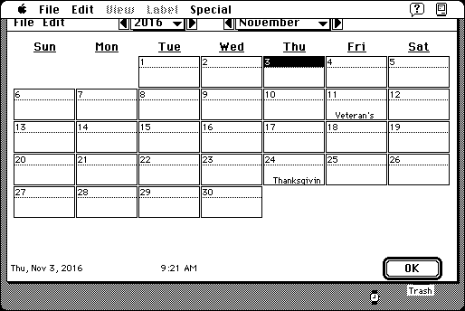

Download
EZCalendar2.01.zip (328K) EZCalendar 2.01 repackaged into a zipped hfs disk image and checksum file. The disk image can be mounted with Mini vMac.
EZCalendar2.01.sea.hqx (487K) EZCalendar 2.01 in the original format.
copyright: John V. Holder
mod date: Jan 2, 2001
license: shareware
last known url
(gone)
A calendar accessible with user definable Hot Keys from any application. Set appointments and record notes. For System “7 on up”.

If you find these downloads useful, please consider helping the Gryphel Project, which hosts them.
Here are the md5 checksums for the downloads, signed with Gryphel Key 5:
--------- GRY SIGNED TEXT --------- 6a02824af3b87f63a3e42518ddbe33ea EZCalendar2.01.zip 863fcf7e069f379fe9ec082da2de42ca EZCalendar2.01.sea.hqx ------- BEGIN GRY SIGNATURE ------- Gry/4Xa8CFcUzxdN/EOkTNbIQK63YsUlJwpuiL0/yxjCBf7fwNKcCXmZ5C9TI149 nfTL0AViEK1lVKIi+Hcnc9rboFfedN6Q0W4ylysTtpXbvieh104ZshNfenEbDIyp e7J0NPezzKB/SN2YqA7GvmxcLK8kRa9lTx6KupuVeblNAheU0FdpPtKvMCNK7rGo -------- END GRY SIGNATURE --------